| Package | Version | Package | Version | Package | Version |
|---|---|---|---|---|---|
| askpass | 1.2.1 | glue | 1.8.0 | rappdirs | 0.3.4 |
| assertthat | 0.2.1 | googledrive | 2.1.2 | rcartocolor | 2.1.2 |
| backports | 1.5.0 | googlesheets4 | 1.1.2 | rcmdcheck | 1.4.0 |
| base | 4.5.2 | graphics | 4.5.2 | RColorBrewer | 1.1-3 |
| base64enc | 0.1-6 | grDevices | 4.5.2 | Rcpp | 1.1.1 |
| bit | 4.6.0 | grid | 4.5.2 | RcppArmadillo | 15.2.3-1 |
| bit64 | 4.6.0-1 | gridExtra | 2.3 | RcppEigen | 0.3.4.0.2 |
| blob | 1.3.0 | gridGraphics | 0.5-1 | reactable | 0.4.5 |
| bmp | 0.3.1 | gridpattern | 1.3.1 | reactR | 0.6.1 |
| brew | 1.0-10 | gridtext | 0.1.5 | readbitmap | 0.1.5 |
| brio | 1.1.5 | gtable | 0.3.6 | readr | 2.1.6 |
| broom | 1.0.12 | haven | 2.5.5 | readxl | 1.4.5 |
| broom.helpers | 1.22.0 | here | 1.0.2 | rematch | 2.0.0 |
| bslib | 0.10.0 | highr | 0.11 | rematch2 | 2.1.2 |
| cachem | 1.1.0 | hms | 1.1.4 | remotes | 2.5.0 |
| callr | 3.7.6 | htmltools | 0.5.9 | reprex | 2.1.1 |
| camcorder | 0.1.0 | htmlwidgets | 1.6.4 | rlang | 1.1.7 |
| cards | 0.7.1 | httpcode | 0.3.0 | rmarkdown | 2.30 |
| cellranger | 1.1.0 | httpuv | 1.6.16 | rnaturalearth | 1.2.0 |
| class | 7.3-23 | httr | 1.4.7 | roxygen2 | 7.3.3 |
| classInt | 0.4-11 | httr2 | 1.2.2 | rprojroot | 2.1.1 |
| cli | 3.6.5 | ids | 1.0.1 | rstudioapi | 0.18.0 |
| cliapp | 0.1.2 | igraph | 2.1.4 | rsvg | 2.6.1 |
| clipr | 0.8.0 | imager | 1.0.8 | Rttf2pt1 | 1.3.14 |
| colorblindr | 0.1.0 | import | 1.3.4 | rversions | 3.0.0 |
| colorspace | 2.1-2 | ini | 0.3.1 | rvest | 1.0.5 |
| commonmark | 2.0.0 | isoband | 0.3.0 | s2 | 1.1.9 |
| compiler | 4.5.2 | jpeg | 0.1-11 | S7 | 0.2.1 |
| conflicted | 1.2.0 | jquerylib | 0.1.4 | sass | 0.4.10 |
| cowplot | 1.2.0 | jsonlite | 2.0.0 | scales | 1.4.0 |
| cpp11 | 0.5.3 | kableExtra | 1.4.0 | selectr | 0.5-1 |
| crayon | 1.5.3 | KernSmooth | 2.23-26 | sessioninfo | 1.2.3 |
| credentials | 2.0.3 | knitr | 1.51 | sf | 1.0-24 |
| cropcircles | 0.2.4 | labeling | 0.4.3 | shiny | 1.12.1 |
| crosstalk | 1.2.2 | labelled | 2.16.0 | showtext | 0.9-7 |
| crul | 1.6.0 | later | 1.4.5 | showtextdb | 3.0 |
| curl | 7.0.0 | lattice | 0.22-7 | sourcetools | 0.1.7-1 |
| data.table | 1.17.8 | lazyeval | 0.2.2 | sp | 2.2-0 |
| datasets | 4.5.2 | lifecycle | 1.0.5 | splines | 4.5.2 |
| DBI | 1.2.3 | litedown | 0.9 | stats | 4.5.2 |
| dbplyr | 2.5.1 | lpSolve | 5.6.23 | stats4 | 4.5.2 |
| desc | 1.4.3 | lubridate | 1.9.4 | stringi | 1.8.7 |
| devtools | 2.4.6 | magick | 2.9.0 | stringr | 1.6.0 |
| diffobj | 0.3.6 | magrittr | 2.0.4 | svglite | 2.2.2 |
| digest | 0.6.39 | maps | 3.4.3 | sys | 3.4.3 |
| downlit | 0.4.5 | markdown | 2.0 | sysfonts | 0.8.9 |
| downloader | 0.4.1 | marquee | 1.2.1 | systemfonts | 1.3.1 |
| dplyr | 1.2.0 | MASS | 7.3-65 | tcltk | 4.5.2 |
| DT | 0.34.0 | Matrix | 1.7-4 | terra | 1.8-93 |
| dtplyr | 1.3.2 | memoise | 2.0.1 | testthat | 3.3.2 |
| e1071 | 1.7-17 | MetBrewer | 0.2.0 | textshaping | 1.0.4 |
| ellipsis | 0.3.2 | methods | 4.5.2 | tibble | 3.3.1 |
| evaluate | 1.0.5 | mime | 0.13 | tidyr | 1.3.2 |
| extrafont | 0.20 | miniUI | 0.1.2 | tidyselect | 1.2.1 |
| extrafontdb | 1.1 | modelr | 0.1.11 | tidytuesdayR | 1.2.1 |
| fansi | 1.0.7 | munsell | 0.5.1 | tidyverse | 2.0.0 |
| farver | 2.1.2 | naniar | 1.1.0 | tiff | 0.1-12 |
| fastmap | 1.2.0 | norm | 1.0-11.1 | timechange | 0.4.0 |
| filelock | 1.0.3 | openssl | 2.3.4 | tinytex | 0.58 |
| fontawesome | 0.5.3 | openxlsx | 4.2.8.1 | tools | 4.5.2 |
| fontBitstreamVera | 0.1.1 | otel | 0.2.0 | triebeard | 0.4.1 |
| fontLiberation | 0.1.0 | pak | 0.9.2 | tweenr | 2.0.3 |
| fontquiver | 0.2.1 | paletteer | 1.7.0 | tzdb | 0.5.0 |
| forcats | 1.0.1 | pander | 0.6.6 | units | 1.0-0 |
| formatR | 1.14 | parallel | 4.5.2 | UpSetR | 1.4.0 |
| fs | 1.6.6 | patchwork | 1.3.2 | urlchecker | 1.0.1 |
| funspotr | 0.0.5 | pillar | 1.11.1 | urltools | 1.7.3.1 |
| gargle | 1.6.1 | pkgbuild | 1.4.8 | usethis | 3.2.1 |
| gdtools | 0.4.4 | pkgcache | 2.2.4 | utf8 | 1.2.6 |
| generics | 0.1.4 | pkgconfig | 2.0.3 | utils | 4.5.2 |
| geofacet | 0.2.4 | pkgdown | 2.2.0 | uuid | 1.2-2 |
| geogrid | 0.1.2 | pkgload | 1.5.0 | vctrs | 0.7.1 |
| gert | 2.3.1 | plyr | 1.8.9 | viridis | 0.6.5 |
| gfonts | 0.2.0 | png | 0.1-8 | viridisLite | 0.4.3 |
| GGally | 2.4.0 | poissoned | 0.1.3.9000 | visdat | 0.6.0 |
| ggforce | 0.5.0 | polyclip | 1.10-7 | vroom | 1.7.0 |
| ggfun | 0.2.0 | praise | 1.0.0 | waffle | 1.0.2 |
| gghighlight | 0.5.0 | prettycode | 1.1.0 | waldo | 0.6.2 |
| ggimage | 0.3.5 | prettyunits | 1.2.0 | webshot | 0.5.5 |
| ggiraph | 0.9.3 | prismatic | 1.1.2 | whisker | 0.4.1 |
| ggpattern | 1.2.1 | processx | 3.8.6 | withr | 3.0.2 |
| ggplot2 | 4.0.2 | profvis | 0.4.0 | wk | 0.9.5 |
| ggplotify | 0.1.3 | progress | 1.2.3 | xfun | 0.56 |
| ggrepel | 0.9.6 | promises | 1.5.0 | xml2 | 1.5.2 |
| ggstats | 0.12.0 | proxy | 0.4-29 | xopen | 1.0.1 |
| ggtext | 0.1.2 | ps | 1.9.1 | xtable | 1.8-4 |
| gh | 1.5.0 | purrr | 1.2.1 | yaml | 2.3.12 |
| gifski | 1.32.0-2 | R6 | 2.6.1 | yulab.utils | 0.2.4 |
| gitcreds | 0.1.2 | ragg | 1.5.0 | zip | 2.3.3 |
부록
자주 묻는 질문 (FAQs)
- 예제 코드를 실행할 때 오류 메시지가 나타나거나 다른 결과가 나옵니다. 어떻게 해결합니까?
- 모든 패키지 로드를 포함하여 챕터의 모든 코드를 순서대로 실행했는지 확인하십시오.
- 부록의 소프트웨어 요구 사항을 참조하여 다른 버전의 R 또는 특정 패키지를 사용하고 있는지 확인하십시오.
- RStudio를 사용하여 볼 때와 저장할 때 플롯이 찌그러지거나 늘어나거나 다르게 보이는 것을 어떻게 막을 수 있습니까?
- camcorder로 gif 기록하기 에서 이 문제에 대한 해결책을 살펴보세요!
- 각 챕터 끝에 있는 연습 문제를 완료했습니다. 정답을 확인할 수 있나요?
- 연습 문제는 정해진 답이 있는 규범적인 질문이 아니라 의도적으로 개방형으로 남겨 두었습니다. 데이터 시각화에는 정답이 하나만 있는 경우가 거의 없으므로 솔루션이 제공되지 않습니다. 여러분이 어떻게 다른 솔루션을 설계하고 구현할 것인지 생각하고, 대신 정답을 확인하는 방법으로 다른 사람들의 피드백을 받는 것이 좋습니다.
소프트웨어 요구 사항
이 책은 R 버전 4.5.2을 사용하여 빌드되었습니다. 이 책은 버전 번호 1.8.27을 사용하는 Quarto로 빌드되었습니다. 프로젝트 환경은 pixi를 사용하여 관리됩니다. 이 책을 빌드하는 데 필요한 모든 R 패키지는 다음 표에서 찾을 수 있습니다. 이 표에는 예제에 필요한 패키지뿐만 아니라 책을 만드는 데 필요한 모든 패키지가 포함되어 있습니다.
소스 코드의 사본은 github.com/nrennie/art-of-viz에서 찾을 수 있습니다.
데이터
이 책에서 사용된 모든 데이터 세트 및 관련 라이선스에 대한 링크:
-
Chapter 2: Programming Languages Database (PLDB contributors 2022)
- Source: pldb.com
- License: PLDB content is published to the public domain and you can use it freely.
- Source: pldb.com
-
Chapter 3: Mapping Museums (Mapping Museums 2021)
- Source: museweb.dcs.bbk.ac.uk/allmus
- License: Licensed with Creative Commons Attribution 4.0 International.
- Source: museweb.dcs.bbk.ac.uk/allmus
-
Chapter 4: Honey Bee Colonies (United States Department of Agriculture: Economics, Statistics and Market Information System 2022)
- Source: usda.library.cornell.edu/concern/publications/rn301137d
- License: All publication files are considered government works and licensed with U.S. Public Domain.
- Source: usda.library.cornell.edu/concern/publications/rn301137d
-
Chapter 5: City of Long Beach Animal Shelter Data (Long Beach Animal Shelter 2025)
- Source: data.longbeach.gov/explore/dataset/animal-shelter-intakes-and-outcomes
- License: Licensed with Creative Commons Attribution 4.0 International.
- Source: data.longbeach.gov/explore/dataset/animal-shelter-intakes-and-outcomes
-
Chapter 6: Canadian Wind Turbine Database (Natural Resources Canada 2021)
- Source: open.canada.ca/data/en/dataset/79fdad93-9025-49ad-ba16-c26d718cc070
- License: Licensed with Open Government Licence – Canada.
- Source: open.canada.ca/data/en/dataset/79fdad93-9025-49ad-ba16-c26d718cc070
-
Chapter 7: The small home ranges and large local ecological impacts of pet cats (McDonald and Cole 2020)
- Source: www.datarepository.movebank.org/entities/datapackage/4ef43458-a0c0-4ff0-aed4-64b07cedf11c
- License: Licensed with Creative Commons Zero License.
- Source: www.datarepository.movebank.org/entities/datapackage/4ef43458-a0c0-4ff0-aed4-64b07cedf11c
-
Chapter 8: Nobel Prize Laureates (www.nobelprize.org 2024)
- Source: api.nobelprize.org/2.1/laureates
- License: Licensed with Creative Commons Zero License.
- Source: api.nobelprize.org/2.1/laureates
-
Chapter 9: Duke Lemur Center (Zehr et al. 2014)
- Source: lemur.duke.edu/duke-lemur-center-database
- License: Licensed with Creative Commons Zero License.
- Source: lemur.duke.edu/duke-lemur-center-database
-
Chapter 10:
tidytuesdayGitHub Repository bynrennie(Rennie 2024c)- Source: github.com/nrennie/tidytuesday
- License: Licensed with Creative Commons Attribution 4.0 International.
- Source: github.com/nrennie/tidytuesday
-
Chapter 11: Medical doctors per 1,000 people, 2019 (Our World in Data 2019)
- Source: ourworldindata.org/grapher/physicians-per-1000-people
- License: Licensed with Creative Commons Attribution 4.0 International.
- Source: ourworldindata.org/grapher/physicians-per-1000-people
-
Chapter 12: Time Zones (Internet Assigned Numbers Authority 2023)
- Source: data.iana.org/time-zones/tz-link.html#tzdb
- License: This web page is in the public domain.
- Source: data.iana.org/time-zones/tz-link.html#tzdb
-
Chapter 13: US House Election Results (MIT Election Data and Science Lab 2017)
- Source: doi.org/10.7910/DVN/IG0UN2
- License: Licensed with Creative Commons Zero License.
- Source: doi.org/10.7910/DVN/IG0UN2
이미지
이 책에서 사용된 모든 이미지(저자가 만들지 않은 것) 및 관련 라이선스에 대한 링크:
- Image: Lemur by Jax (@lysrix)
- Source: unsplash.com/photos/red-and-white-rodent-h5xrh3CNT-k (Jax (@lysrix) 2017)
- License: Licensed with Unsplash License.
- Image: {dplyr} Hex sticker
- Source: github.com/rstudio/hex-stickers/blob/main/PNG/dplyr.png (RStudio 2020a)
- License: Licensed with Creative Commons Zero License.
{kind=link}
- Image: {ggplot2} Hex sticker
- Source: github.com/rstudio/hex-stickers/blob/main/PNG/gglot2.png (RStudio 2018b)
- License: Licensed with Creative Commons Zero License.
{kind=link}
- Image: {tidyr} Hex sticker
- Source: github.com/rstudio/hex-stickers/blob/main/PNG/tidyr.png (RStudio 2020c)
- License: Licensed with Creative Commons Zero License.
{kind=link}
- Image: {readr} Hex sticker
- Source: github.com/rstudio/hex-stickers/blob/main/PNG/readr.png (RStudio 2018d)
- License: Licensed with Creative Commons Zero License.
{kind=link}
- Image: {purrr} Hex sticker
- Source: github.com/rstudio/hex-stickers/blob/main/PNG/purrr.png (RStudio 2018c)
- License: Licensed with Creative Commons Zero License.
{kind=link}
- Image: {forcats} Hex sticker
- Source: github.com/rstudio/hex-stickers/blob/main/PNG/forcats.png (RStudio 2018a)
- License: Licensed with Creative Commons Zero License.
{kind=link}
- Image: {tibble} Hex sticker
- Source: github.com/rstudio/hex-stickers/blob/main/PNG/tibble.png (RStudio 2018e)
- License: Licensed with Creative Commons Zero License.
{kind=link}
- Image: {stringr} Hex sticker
- Source: github.com/rstudio/hex-stickers/blob/main/PNG/stringr.png (RStudio 2020b)
- License: Licensed with Creative Commons Zero License.
{kind=link}
- Image: Wind Power Flaticon
- Source: www.flaticon.com/free-icon/wind-power_5670189 (Flaticon.com 2024)
- License: Licensed with Flaticon License: Free for personal and commercial purpose with attribution.
시각화 갤러리
2 프로그래밍 언어: ggplot2를 이용한 덤벨 차트 장:
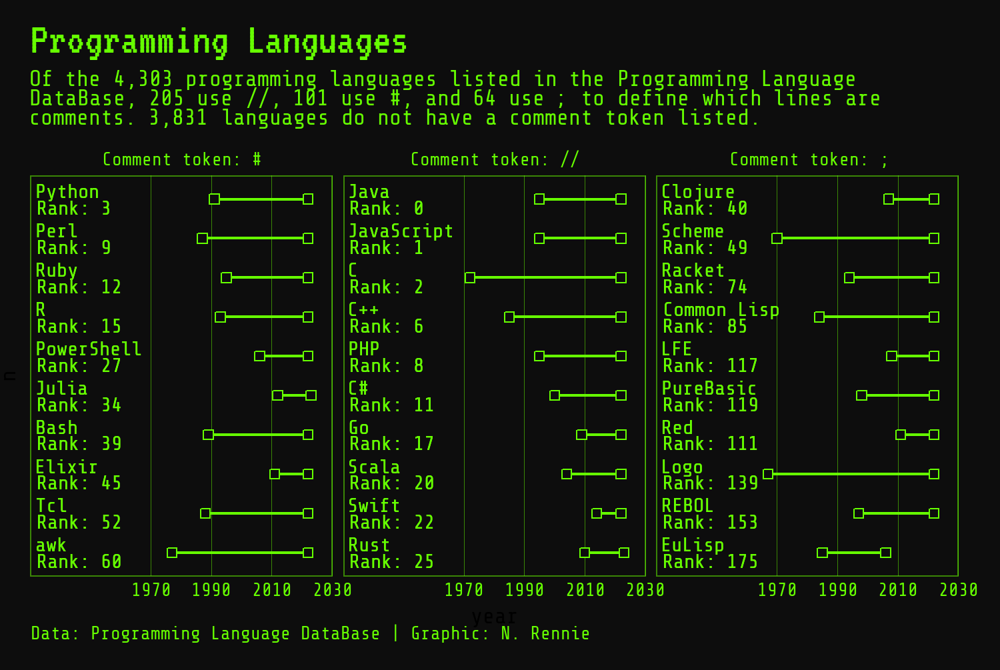
3 영국 박물관: gghighlight로 선형 차트 강조하기 장:
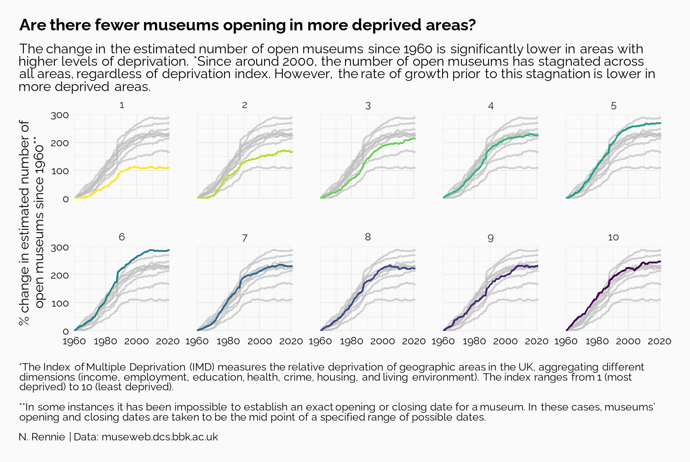
4 꿀벌 군집 손실:푸아송 디스크 샘플링으로 수량 시각화 장:
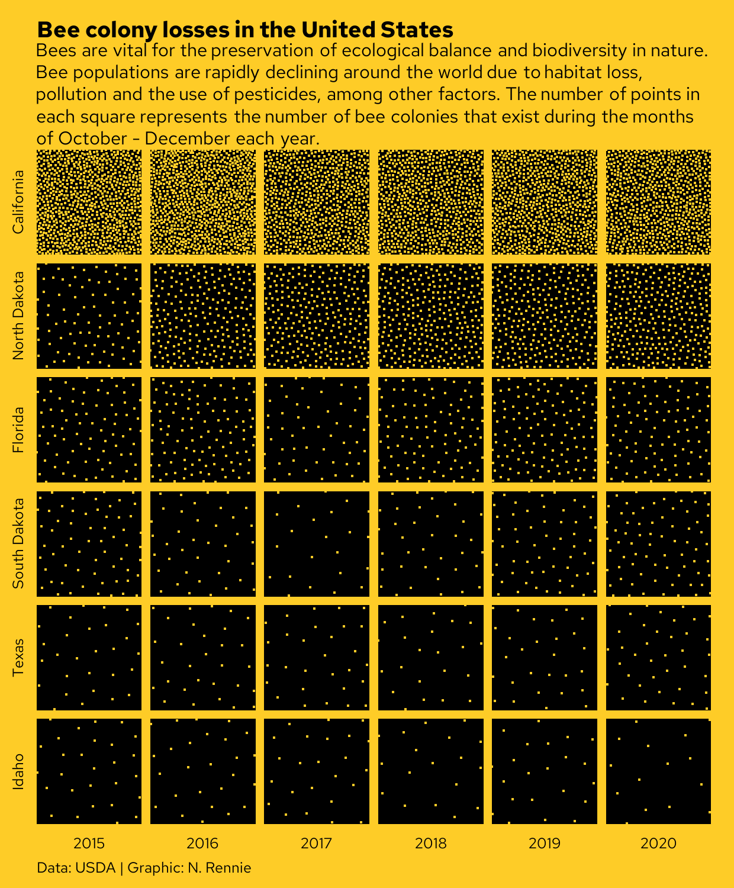
5 동물 보호소 입소: ggforce를 사용한 게이지 차트 만들기 장:
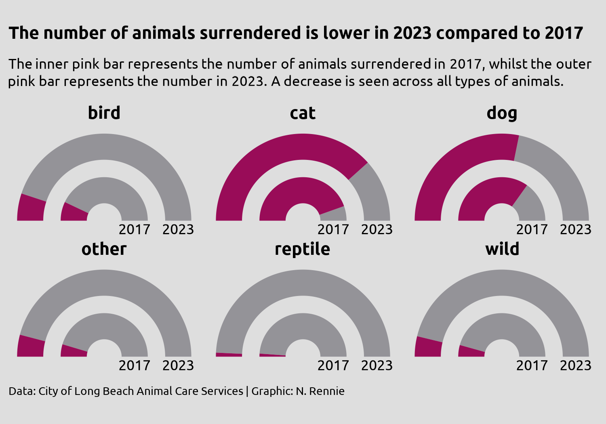
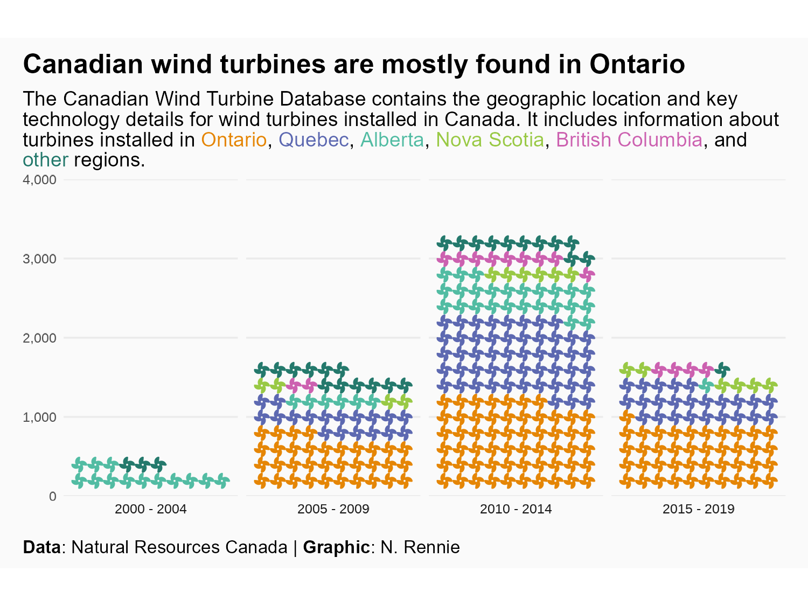
7 고양이: ggtext를 사용한 데이터 기반 주석 장:
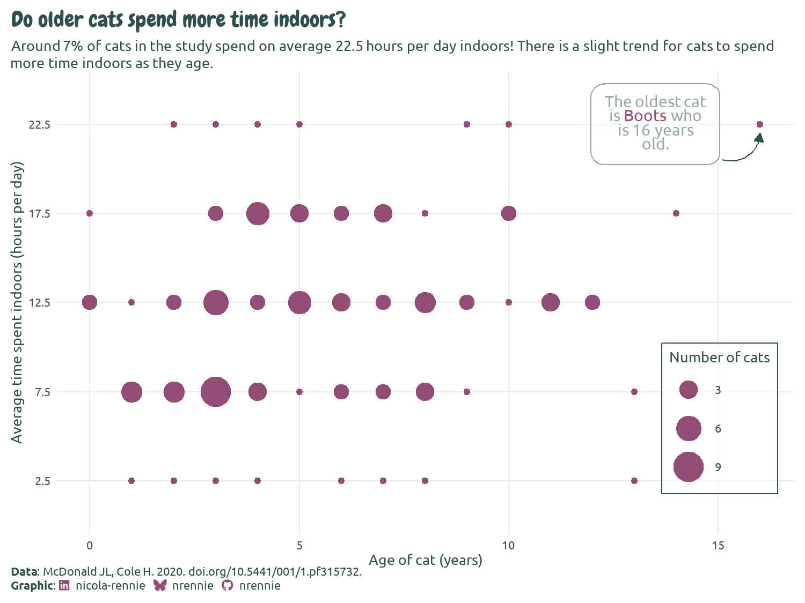
8 노벨상 수상자: 텍스트 배치 및 플롯 매개변수화 장:
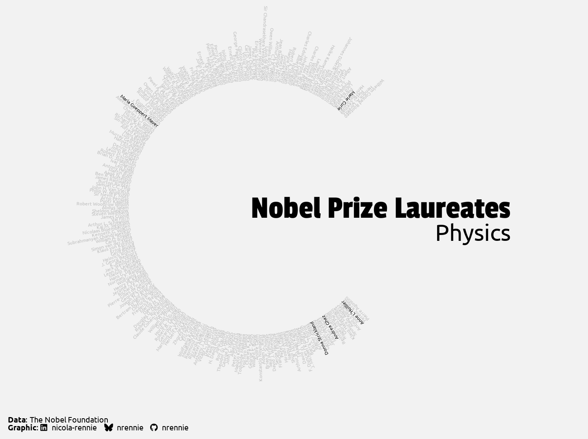
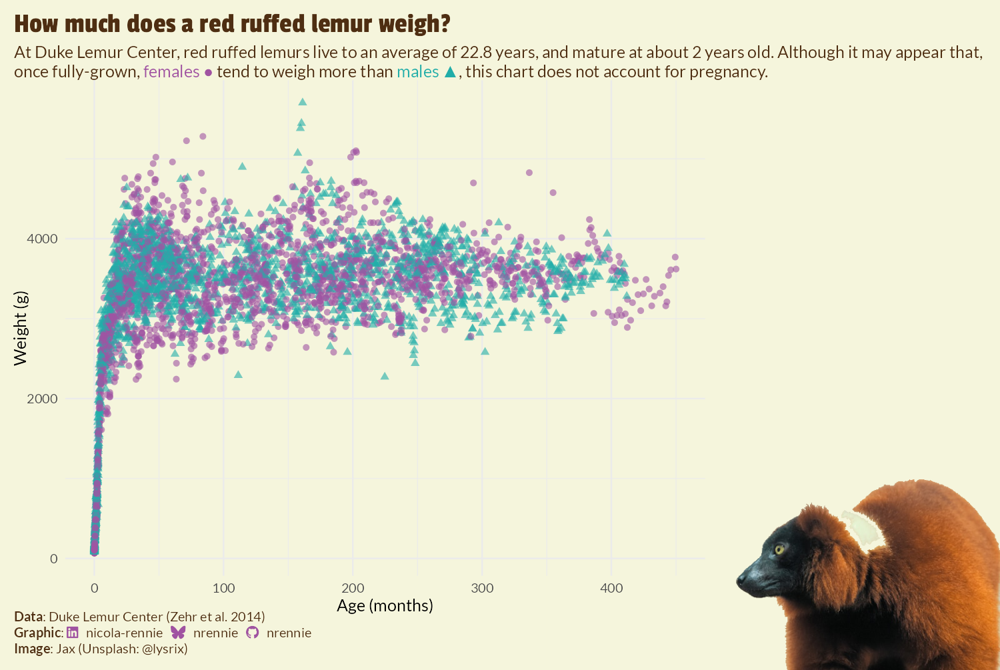
10 R 패키지: 사용자 지정 패면 레이블에 이미지 사용하기 장:
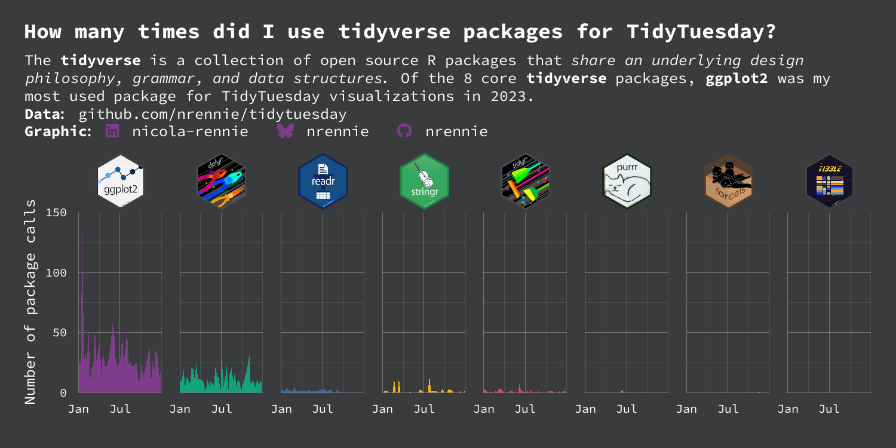11 전 세계 의사 분포: ggplot2로 지도 만들기 장:
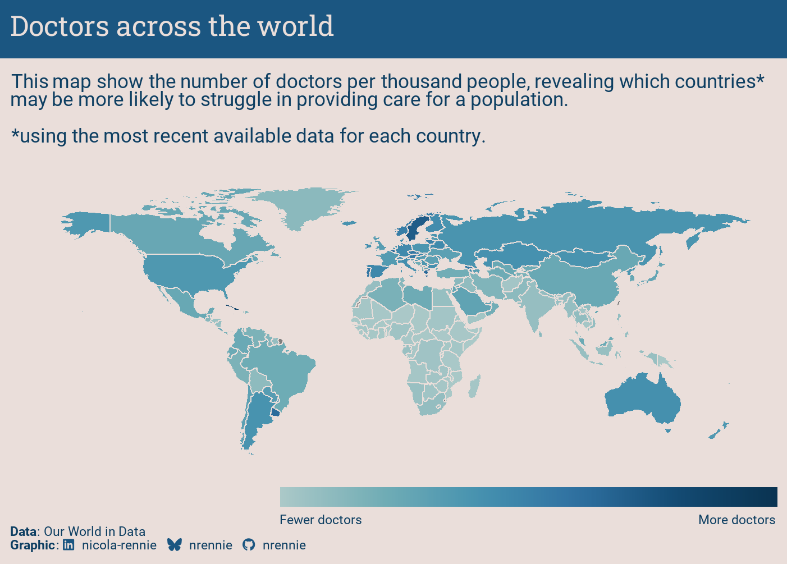
12 시간대: sf를 사용한 공간 데이터 및 매핑 장:
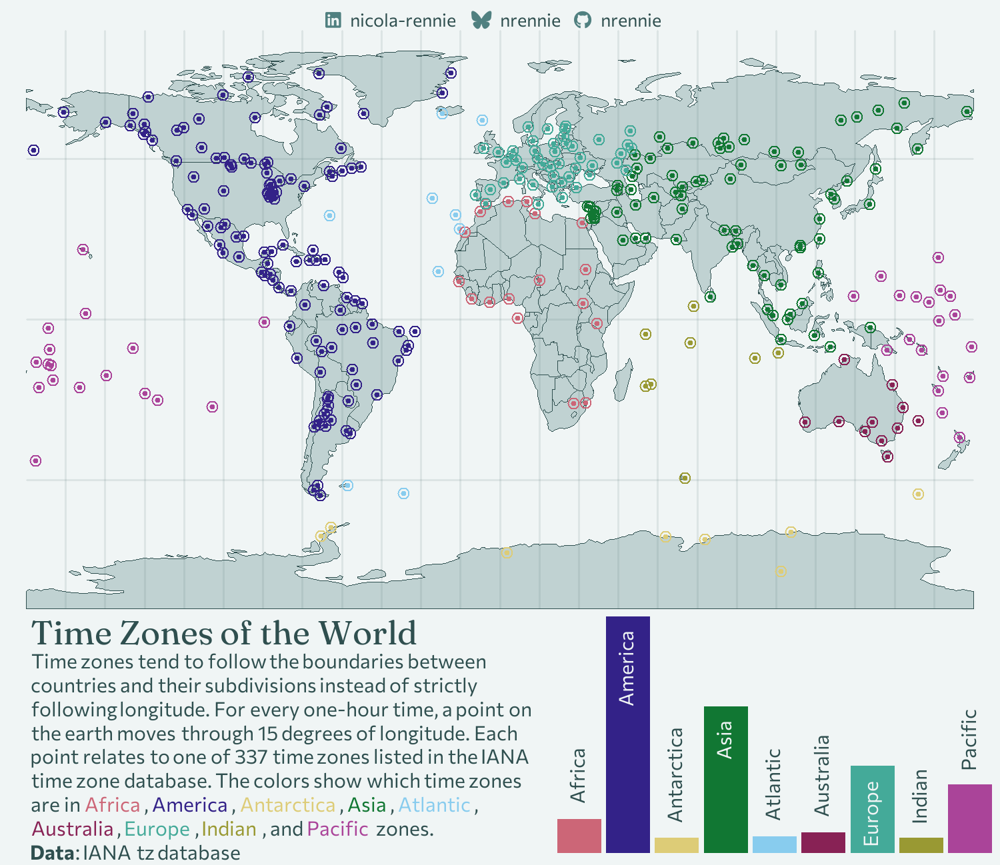13 미국 하원 선거: geofacet을 이용한 그리드 위의 지리 장:
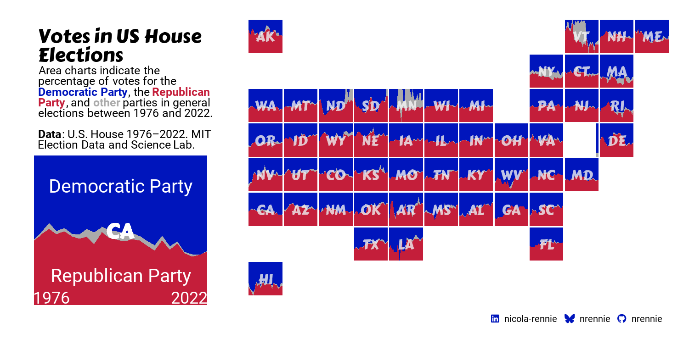
책 표지
이 책의 (작업 중인) 표지도 ggplot2로 만들어졌습니다. 아래에서 코드를 볼 수 있습니다.
Code
# Packages ----------------------------------------------------------------
library(ggplot2)
library(showtext)
library(cropcircles)
library(ggimage)
# Fonts -------------------------------------------------------------------
font_add_google("Source Sans 3", "Source")
showtext_auto()
showtext_opts(dpi = 300)
# Functions ---------------------------------------------------------------
is_even <- function(x) {
return((x %% 2) == 0)
}
make_hex_coords <- function(x0, y0, r) {
angles <- seq(pi / 6, 2 * pi + pi / 6, length.out = 7)
hexagon_coords <- function(xc, yc, rad, id) {
x <- xc + rad * cos(angles)
y <- yc + rad * sin(angles)
data.frame(x = x, y = y, grp = id, x_grp = xc, y_grp = yc)
}
result <- do.call(
rbind,
mapply(hexagon_coords, x0, y0, r, seq_along(x0),
SIMPLIFY = FALSE
)
)
return(result)
}
# Parameters --------------------------------------------------------------
n_x <- 5
n_y <- 8
col_palette <- c("#FBEBFF", "#E999FF", "#9300B8", "#400052")
bg_col <- "#200029"
body_font <- "Source"
padding <- 20
width <- 5
# Generate data -----------------------------------------------------------
inputs <- expand.grid(
x = seq(1, length.out = n_x, by = 1),
y = seq(1, length.out = n_y, by = 1)
) |>
tibble::as_tibble() |>
dplyr::mutate(
x = dplyr::if_else(
is_even(y),
x + 0.5,
x
)
)
col_df <- data.frame(
col_grp = seq(1, n_x + 0.5, by = 0.5),
color = rev(grDevices::colorRampPalette(col_palette)(n_x * 2)),
alpha = seq(0.2, 0.6, length.out = n_x * 2)
)
output <- make_hex_coords(
x0 = inputs$x,
y0 = inputs$y,
r = rep(0.5, n_x * n_y)
) |>
tibble::as_tibble() |>
dplyr::left_join(col_df, by = c("x_grp" = "col_grp"))
# Subplots ----------------------------------------------------------------
g1 <- ggplot() +
geom_col(
data = data.frame(
x = LETTERS[1:3],
y = c(2, 5, 3)
),
mapping = aes(x = x, y = y),
fill = bg_col
) +
theme_void() +
theme(
plot.background = element_rect(
fill = "white", color = "white"
),
axis.line.x.bottom = element_line(color = bg_col, linewidth = 1),
axis.line.y.left = element_line(color = bg_col, linewidth = 1),
plot.margin = margin(30, 30, 30, 30),
aspect.ratio = 1
)
tmp_a <- tempfile()
ggsave(tmp_a, g1,
device = "png",
height = 400, width = 400,
dpi = 300, bg = bg_col,
units = "px"
)
img_cropped_a <- crop_hex(tmp_a, bg_fill = "white")
set.seed(1234)
x <- runif(15)
g2 <- ggplot() +
geom_point(
data = data.frame(
x = x,
y = x + runif(15, 0, 0.1)
),
mapping = aes(x = x, y = y),
fill = bg_col
) +
scale_x_continuous(limits = c(0, 1)) +
scale_y_continuous(limits = c(0, 1)) +
theme_void() +
theme(
plot.background = element_rect(
fill = "white", color = "white"
),
axis.line.x.bottom = element_line(color = bg_col, linewidth = 1),
axis.line.y.left = element_line(color = bg_col, linewidth = 1),
plot.margin = margin(30, 30, 30, 30),
aspect.ratio = 1
)
tmp_b <- tempfile()
ggsave(tmp_b, g2,
device = "png",
height = 400, width = 400,
dpi = 300, bg = bg_col,
units = "px"
)
img_cropped_b <- crop_hex(tmp_b, bg_fill = "white")
g3 <- ggplot() +
geom_line(
data = data.frame(
x = 1:10,
y = cumsum(runif(10))
),
mapping = aes(x = x, y = y),
color = bg_col
) +
geom_line(
data = data.frame(
x = 1:10,
y = cumsum(runif(10, 0, 0.5))
),
mapping = aes(x = x, y = y),
color = col_palette[3]
) +
theme_void() +
theme(
plot.background = element_rect(
fill = "white", color = "white"
),
axis.line.x.bottom = element_line(color = bg_col, linewidth = 1),
axis.line.y.left = element_line(color = bg_col, linewidth = 1),
plot.margin = margin(30, 30, 30, 30),
aspect.ratio = 1
)
tmp_c <- tempfile()
ggsave(tmp_c, g3,
device = "png",
height = 400, width = 400,
dpi = 300, bg = bg_col,
units = "px"
)
img_cropped_c <- crop_hex(tmp_c, bg_fill = "white")
# Plot --------------------------------------------------------------------
ggplot() +
geom_polygon(
data = output,
mapping = aes(
x = x, y = y, group = grp,
color = alpha(color, alpha)
),
fill = "transparent",
linewidth = 0.4
) +
geom_image(
data = output[1,],
aes(
x = 4.5,
y = 4,
image = img_cropped_a
),
size = 0.1
) +
geom_image(
data = output[1,],
aes(
x = 2,
y = 5,
image = img_cropped_b
),
size = 0.1
) +
geom_image(
data = output[1,],
aes(
x = 3.5,
y = 6,
image = img_cropped_c
),
size = 0.1
) +
annotate(
"text",
x = 1.25, y = 2.2,
label = "ggplot2를 활용한\n데이터 시각화의\n기술",
family = body_font,
color = "white",
hjust = 0,
vjust = 1,
size = 28,
fontface = "bold",
size.unit = "pt"
) +
annotate(
"text",
x = 1.25, y = 6.9,
label = "Nicola Rennie",
family = body_font,
color = "white",
hjust = 0,
vjust = 1,
size = 18,
fontface = "bold",
size.unit = "pt"
) +
scale_color_identity() +
scale_y_reverse() +
coord_fixed(expand = FALSE, clip = "off") +
theme_void() +
theme(
plot.background = element_rect(fill = bg_col, color = bg_col),
plot.margin = margin(-padding, -padding, -padding, -padding)
)
# Save --------------------------------------------------------------------
if (interactive()) {
ggsave("images/cover.png",
height = 1.5*width, width = width,
dpi = 300, bg = bg_col
)
}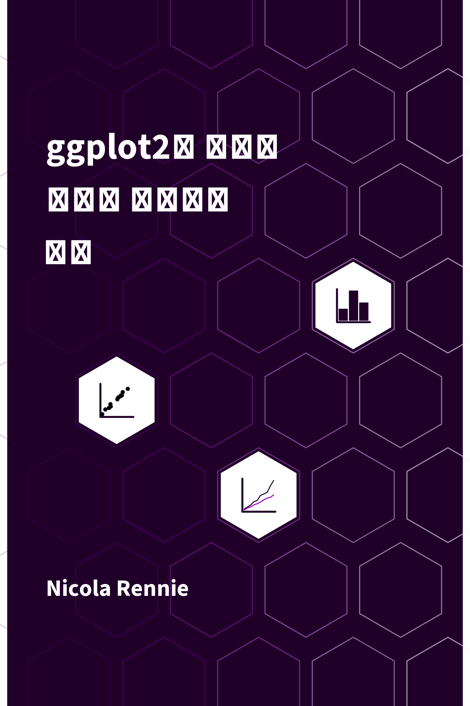
{kind=link}